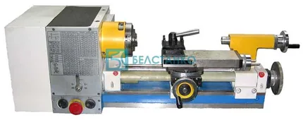
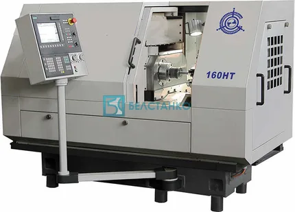
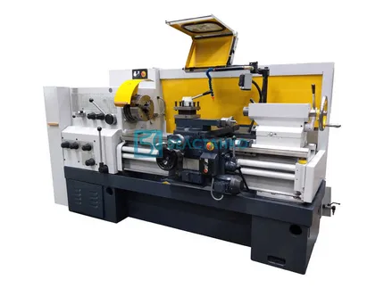
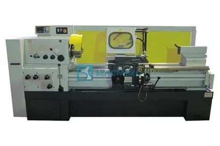
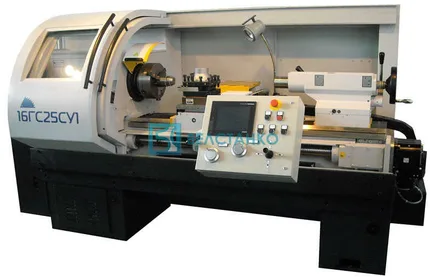
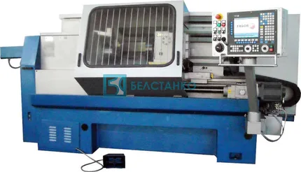
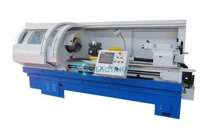

1К625Д-2000
Станок токарно-винторезный
4 500 000 ₽Станок токарно-винторезный
4 500 000 ₽
Станок токарно-винторезный
11 000 000 ₽
Станок настольный универсальный токарный
775 200 ₽


Станок токарно-винторезный
1 606 000 ₽
Станок токарно-винторезный
6 147 900 ₽
Станок токарно-винторезный
6 462 900 ₽
Станок токарный с оперативной системой управления
Цена по запросу
Cтанок токарный с ЧПУ
11 381 608 ₽

(1000) Токарно-винторезный станок (1В625)
Цена по запросу(2000) Токарно-винторезный станок (1В625)
Цена по запросуТокарно-винторезный станок (РМЦ 1500 мм)
Цена по запросу
(1000) Станок токарно-винторезный
1 480 000 ₽(1500) Станок токарно-винторезный
1 575 000 ₽Станок токарно-винторезный
2 730 000 ₽